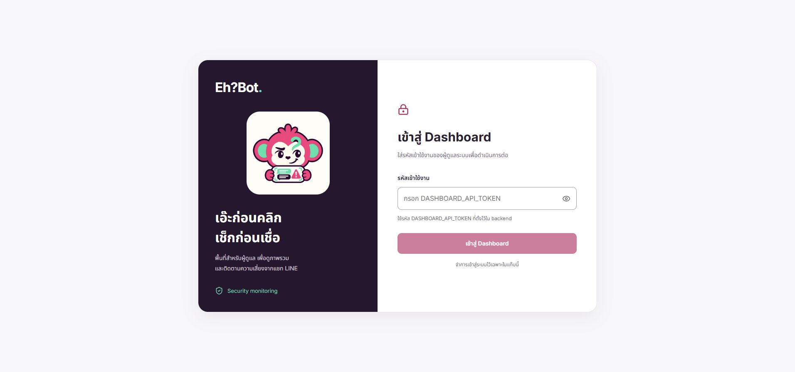
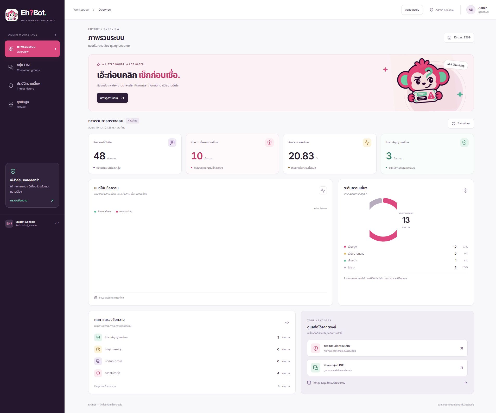
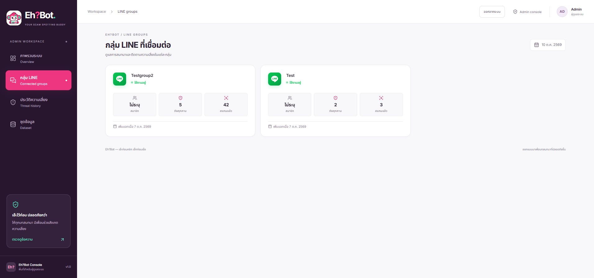
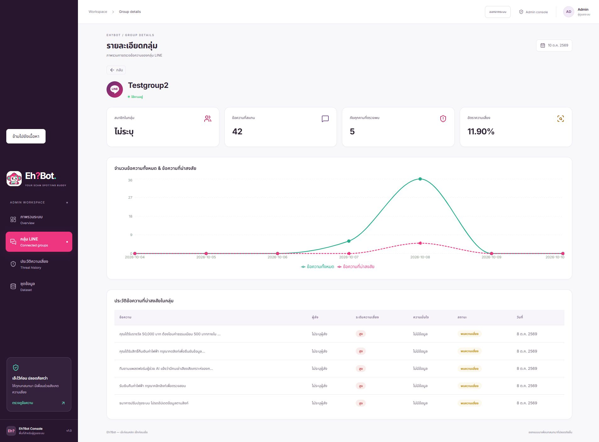
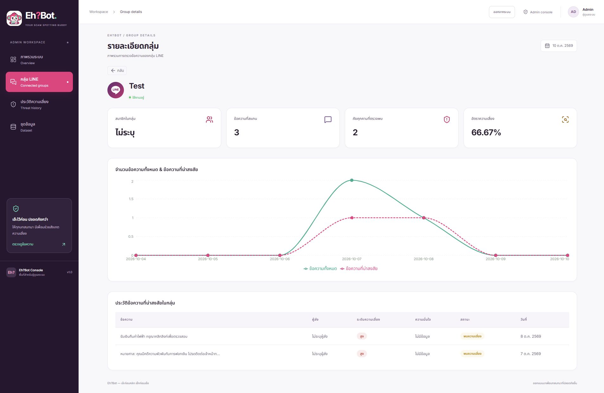
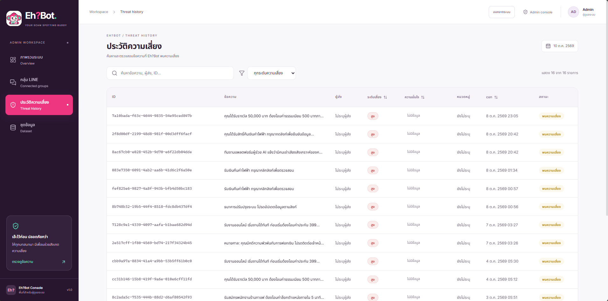
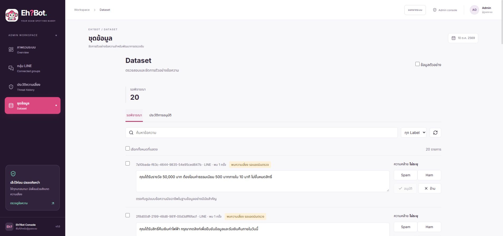
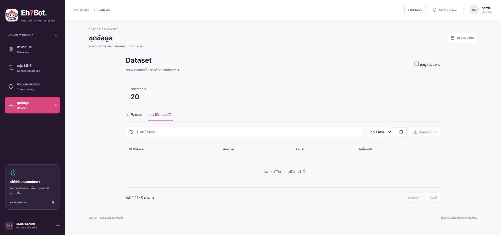

Eh?Bot / Dashboard ผู้ดูแลระบบ
Eh?Bot
ระหว่างพัฒนา.
โปรเจกต์จบชั้นปีที่ 4 · อยู่ระหว่างพัฒนา
ผมเน้นพัฒนา FastAPI Backend และขั้นตอนวิเคราะห์ข้อความที่เชื่อม LINE, กฎ, Vector Search และ Gemini ภาพ Dashboard ทั้ง 8 หน้าจอแสดงขั้นตอนของโปรเจกต์ ได้แก่ เข้าสู่ระบบ ภาพรวม กลุ่ม LINE ประวัติข้อความเสี่ยง และตรวจชุดข้อมูล
ภาพชุดข้อมูลแสดงส่วนบนของหน้า · ประวัติการอนุมัติยังไม่มีรายการในขณะแคป







